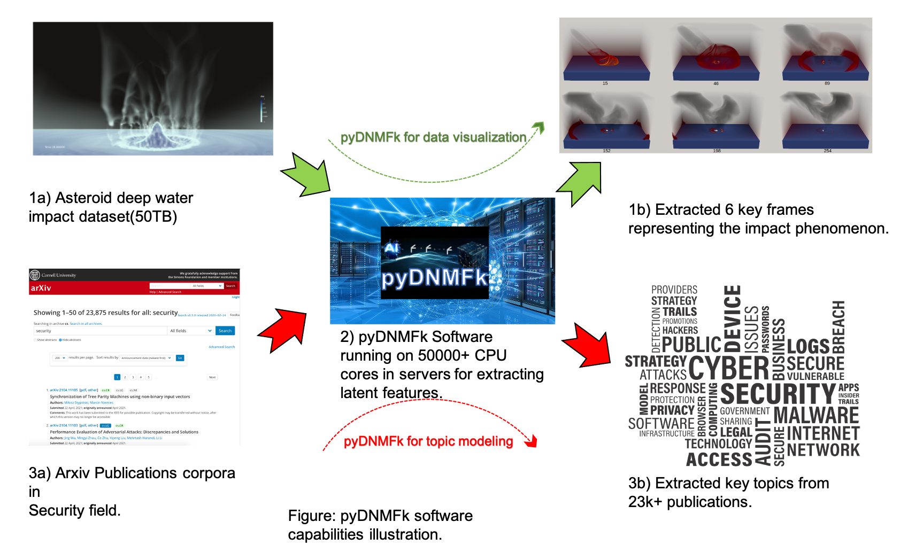
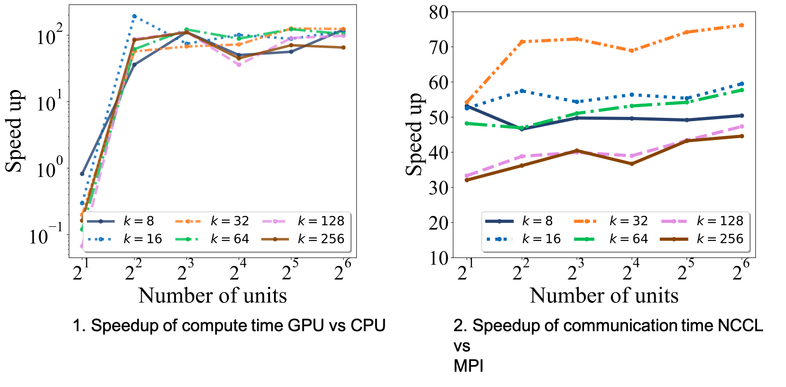
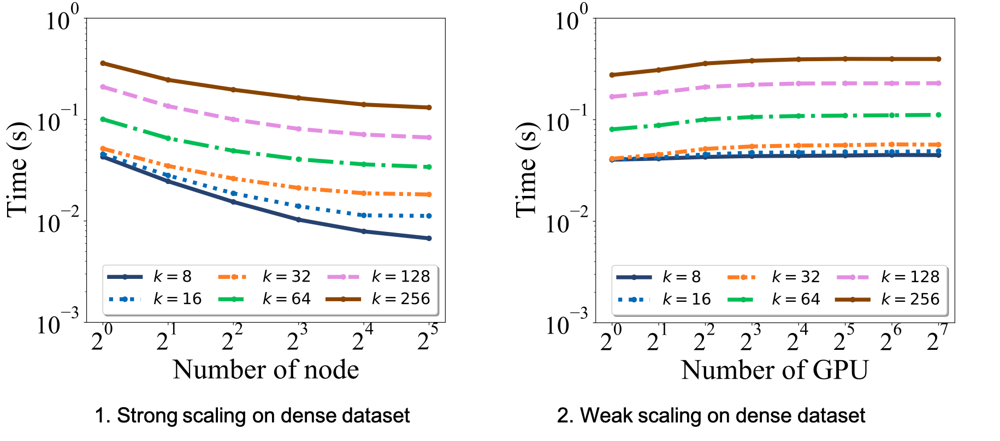

cuda-pyDNMFk: Cuda Python Distributed Non Negative Matrix Factorization with determination of hidden features#
cuda-pyDNMFk is a dynamic software platform tailored for the decomposition of large datasets that surpass the limitations of in-memory processing. Building on its foundational capabilities, the latest branch introduces significant enhancements, enabling out-of-memory and distributed decomposition. This ensures that datasets, regardless of their size, can be effectively processed across distributed CPU/GPU architectures. By leveraging advanced GPU functionalities provided by libraries like CuPy and integrating efficient sparse matrix manipulations, cuda-pyDNMFk ensures rapid, efficient, and scalable performance. Whether you’re working on a single GPU setup or a multi-node GPU cluster, pyDNMFk offers a robust solution for handling massive datasets seamlessly.

Features of Distributed Out-of-Memory NMF Implementation#
Efficiency on HPC Systems: Optimized for heterogeneous high-performance-computing systems to tackle large datasets.
NMFk Foundation: Builds upon the proven capabilities of NMFk, which is known for automatic model selection and extraction of latent variables.
Extended Support: Adds the ability to handle both dense and sparse matrix operations across multi-node, multi-GPU systems.
Out-of-Memory Solutions: Designed for situations where the memory demand for factorizing a matrix exceeds the available GPU memory, by employing batching/tiling strategies.
GPU Acceleration: Enhances matrix operations through the power of GPU cores and tensor cores (when available) for maximum speed.
Optimized Data Transfers: Uses CUDA streams to minimize I/O latency by overlapping data transfers and computations.
Enhanced Communications: Implements NVIDIA Collective Communication Library (NCCL) for streamlined intra-node and inter-node communications.
Impressive Benchmarks: Achieves significant speedups, with up to 76x improvement over the traditional CPU-based NMFk.
Scalability: Demonstrates good weak scaling on large multi-GPU clusters, proven to work on decomposing matrices of up to 11 Exabyte-size with a density of (10^{-6}).
Figure: Overview of the pyDNMFk workflow implementation.
Installation:#
git clone https://github.com/lanl/pyDNMFk.git
cd pyDNMFk
conda create --name cudaNMF --file conda_env_requirements.txt
conda activate cudaNMF
python setup.py install
Prerequisites:#
conda
numpy>=1.2
matplotlib
MPI4py
scipy
h5py
cupy
NCCL
Documentation#
You can find the documentation here.
Usage:#
# ... [the given Python code]
See the resources for more use cases.
Benchmarking:#
Figure: Scaling benchmarks for 10 iterations for Frobenius norm based MU updates with MPI vs NCCL for 1) compute and 2) communication timings
Scalability:#
Figure: Scaling benchmarks for 10 iterations for Frobenius norm based MU updates with NCCL operations for 1) strong and 2) weak scaling
Authors:#
Ismael Boureima - Los Alamos National Laboratory
Manish Bhattarai - Los Alamos National Laboratory
Erik Skau - Los Alamos National Laboratory
Maksim Eren - Los Alamos National Laboratory
Boian Alexandrov - Los Alamos National Laboratory
Citation:#
@misc{rw2019timm, ... }
@article{boureima2022distributed, ... }
Acknowledgments:#
Los Alamos National Lab (LANL), T-1
Copyright Notice:#
© (or copyright) 2020. Triad National
Welcome to cuda-pyDNMFk’s documentation!#
Contents: